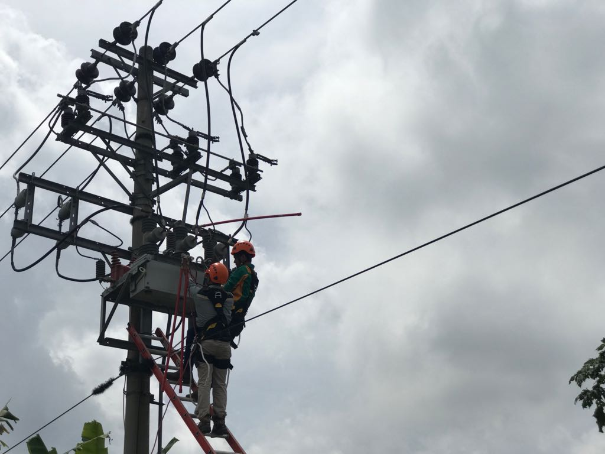

Berita
PLN Nyalakan 5 Desa Di Sumatera Selatan
Bagikan : facebook || twitter
Siaran pers || 17 May 2018

Bertepatan dengan upacara peringatan Hari Listrik Nasional ke-73 tahun 2018, Sekda Sumatera Selatan Nasrun Umar meresmikan 5 Desa Menyala di Provinsi Sumatera Selatan. Peresmian ini dipusatkan di Kantor PLN UIP Sumbagsel pada Senin (29/9/2018).
Lima desa tersebut adalah Desa Sitogar Upang Jaya-Kabupaten Banyuasin, Desa Langsatan-Kabupaten Muara Enim, Desa Ringin Sari-Kabupaten Ogan Ilir, serta Desa Air Bening dan Desa Jadi Mulya Ridan di Kabupaten Musi Rawas Utara.
Sekda Sumatera Selatan mengapresiasi insan-insan PLN dan seluruh instansi yang bergerak di bidang ketenagalistrikan di seluruh Wilayah Sumatera Selatan, yang telah bekerja keras menciptakan kondisi ketenagalistrikan yang baik.
Turut hadir juga Kepala Dinas ESDM Sumatera Selatan Robert Harry pada peresmian Desa Menyala hari ini. Mewakili Gubernur Sumatera Selatan, Kadis ESDM mengucapkan selamat untuk kelima desa menyala tersebut.
“Semoga dengan menyalanya listrik PLN, kelima desa ini tidak merasa terkucil lagi karena saat ini sudah menikmati listrik seperti desa-desa lainnya,” ujar Robert.
Sementara General Manager PLN UIW S2JB Daryono mengatakan bahwa saat ini di tahun 2018, jumlah desa berlistrik di Provinsi Sumatera Selatan sejumah 3.166 Desa dari total 3.239 Desa yang ada di Sumatera Selatan.
Sebanyak 1.494 Desa Berlistrik dari total 1.562 Desa di Provinsi Jambi, dan sebanyak 1.509 Desa Berlistrik dari total 1.513 Desa di Provinsi Bengkulu.
Tentunya peningkatan jumlah desa berlistrik ini diikuti juga dengan peningkatan Rasio Elektrifikasi yang mengingkat pada tahun 2017 sebesar 87,40% menjadi 90,52% pada September 2018.
“PLN berkomitmen untuk terus mewujudkan kehidupan masyarakat yang lebih baik melalui adanya listrik. Target PLN UIW S2JB menuju 100% Rasio Desa Berlistrik pada tahun 2019,”ujar Daryono.
Jumlah penambahan desa berlistrik di 2018 yakni 11 desa di Sumatera Selatan dengan potensi pelanggan sebesar 6.860, 28 desa di Provinsi Jambi dengan potensi pelanggan sebesar 5.450, dan 5 desa di Provinsi Bengkulu dengan potensi pelanggan sebesar 1.450.
Copyright©2020 PT. PLN (Persero) UPB Sumbagsel